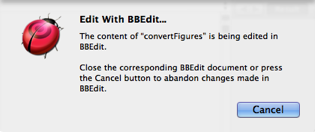

|
External Editor |
|
You can use an alternative text-editing application to edit a script. Possible choices are:
This feature works seamlessly:
-
Start with a script window open in Script Debugger.
-
Open the same script in an external editor and edit it there. To do so:
- Choose File > Edit With XXX. A temporary text copy of the script is created, and is opened in the external editor application.
The application name (“XXX”) depends on which applications you have and which ones are running. Script Debugger will prefer a running application to one that is not running, and among running applications or non-running applications it will prefer the order BBEdit, TextWrangler, TextMate.
While the external editor is editing the script, Script Debugger’s version of the script remains open but locked. You’ll see a dialog advising you that the script is being edited elsewhere, and a “Locked” watermark at the lower right of the script window.
 -
In the external editor application, save and close the document. Script Debugger automatically adopts the changes you made in the external editor.
-
Whenever you save the document in the external editing application, the Script Debugger copy is updated to match.
-
When you close the document in the external editing application, the warning dialog is removed from the Script Debugger script window (and Script Debugger comes to the front). This is the normal way in which an external editing session ends in good order.
Alternatively, you might change your mind and decide to break off the external editing session prematurely without reflecting the changes from the external editing application back into the Script Debugger document. To do so:
- Switch back to Script Debugger and click Cancel in the warning dialog.
The temporary text copy of the script remains open in the external application, but it no longer has any connection to Script Debugger.
-